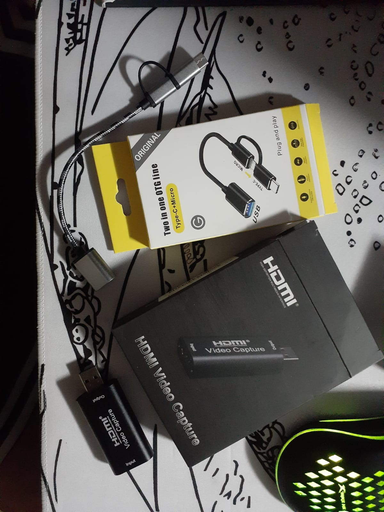
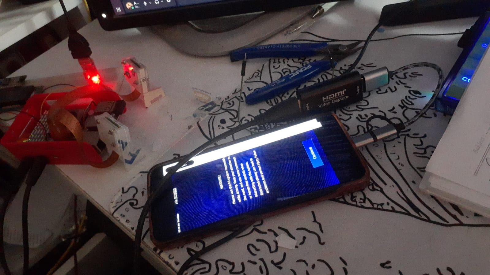

These two weeks
libbev_calib.so (OpenCV and libcamera, no GPU), separate from the GPU view library, and made the two hand the cameras over safely
ivi-homescreen-shared and libcamera in it, and a script that builds the app's libraries with it, so an app fix no longer needs a full image
v0.7.0+rpt20260202 and v0.6.0+rpt20251202
bev_config.ini, settable from Settings or the layout screen; added a board reference picture so a pin can be placed by clicking where its corner is on the printed board
Details
Until now calibration meant two Python scripts on my PC (calibrate_intrinsics.py and
calibrate_bev.py), and the app's calibration panel was a mock with X, Y and yaw buttons.
Commercial 360° camera systems calibrate on the car: boards on the ground around it, every camera sees
some of them, the system finds the corners, and a technician can move any point that was found wrong.
That is what I built.
Calibration is a separate library, libbev_calib.so, with its own Dart package
(flutter/bev_calib) that holds the screens too. It uses OpenCV and libcamera stills on the
CPU only, and never runs at the same time as the GPU view library. One catch: libcamera allows one camera
manager per process, and a second one aborts the process. Both libraries load into the same homescreen
process, so each one checks the other through dlopen(..., RTLD_NOLOAD) and waits for its
manager to go before creating one. The app also unmounts every live view before it opens a calibration
page, and the view comes back with the new calibration afterwards.
A setup is a small layout file: which cameras take part, and where each board lies around the car. The app ships six: front pair, back pair, four cameras, front and back pairs, left and back, and my bench rig. It doesn't depend on the number of cameras, and the ArUco dictionary is set per board.
[camera]
slot = 0 # bev_config.ini slot, also libcamera camera 0
facing = front
lens = imx219
[board]
dict = 4X4_100
squares = 6x8
square = 0.090
marker = 0.070
first_id = 24 # this board's markers are 24..47
x = 1.6 # board centre around the car, metres
y = 3.0
yaw = -45
Every board has its own marker ids (0, 24, 48 and 72 in 4X4_100), so a camera that sees two
boards knows which corner belongs to which, and one printed set works for every setup. A script renders
the boards of a layout as PDFs at their real size.
The homography each camera stores (hb2i) used to be relative to one board. With several
boards it is now relative to the car: origin at the car centre, X to the right, Y forward. It maps to
undistorted pixels, because the renderer applies the lens distortion after it, and it is saved with the
size of the still it was measured on. Old config files are converted when they are loaded and render
exactly as before. The old live-tune keys (X/G/Y and the saved offsets) are gone.
| Check | Result |
|---|---|
| Seam error | Bench stills of 2026-06-23: median 0.60 mm, against 1.36 mm from calibrate_bev.py on the same shot |
| Lens fit | 87 photos: fx 1286.9 against Python's 1287.1, rms 0.210 px against 0.208 px |
| Render | A saved calibration through the real GPU pipeline: the board comes out square and both cameras line up |
| UI | An automated Flutter desktop test on the stills: pick, capture, drag a pin, result, save |
| AGL build | libbev_calib.so builds against OpenCV 4.13 in the recipe; the package carries both libraries and the layouts |
For the AGL build, the recipe gained opencv in DEPENDS, and OpenCV's default
features that calibration doesn't use (Python bindings, samples, gapi, GStreamer, gphoto2, TBB, GTK) are
removed in site.conf. The new image is flashed on the Pi 5.
Every app change so far went through bitbake, and the image rebuilds took hours. An SDK lets me rebuild
only libbev_view.so or libbev_calib.so in seconds and copy it to the board. The
SDKs I had (/opt/agl-sdk/21.90.0-*) were made before the meta-flutter v3 move: they have no
ivi-homescreen-shared and no OpenCV. So the new SDK is made from the current branch, with the
three development packages the app needs added to its target sysroot:
TOOLCHAIN_TARGET_TASK:append = " opencv-dev ivi-homescreen-shared-dev libcamera-dev"
bitbake agl-ivi-demo-flutter -c populate_sdk
The SDK's cross-canadian gcc and binutils build with -j1 to stay inside my PC's memory, and
an at-spi2-core bbappend in meta-agl-flutter works around a known
nativesdk-at-spi2-core build failure.
The first build failed in nativesdk-rust 1.96.1. AGL puts a Rust compiler in the SDK
(SDK_TOOLCHAIN_LANGS = "rust"), and while bootstrapping it compiles part of itself with my
PC's gcc, GCC 11 on Ubuntu 22.04, passing it -fcanon-prefix-map, which only
exists from GCC 13:
gcc: error: unrecognized command-line option '-fcanon-prefix-map'; did you mean '-fmacro-prefix-map='?
error: failed to run custom build command for `lzma-sys v0.1.20`
The app has no Rust, so the SDK leaves it out (SDK_TOOLCHAIN_LANGS:remove = "rust", which only
changes the SDK, not the image). The second build finished:
agl-glibc-x86_64-agl-ivi-demo-flutter-aarch64-raspberrypi5-toolchain-21.93.0.sh, 1.5 GB, with
OpenCV 4.13, ivi-homescreen-shared 3.0 and libcamera in its sysroot.
Two things were needed to build the app with it. The SDK ships no cmake, so the host one runs,
and every lookup has to be pinned to the target sysroot, or find_package(OpenCV) takes my PC's
x86 OpenCV. And the app's CMake picks up a sibling ../ivi-homescreen checkout when there is one,
which in a cross build sends it looking for an emb build of the shell instead of the SDK's
package, so a new option, IHS_PROBE_SIBLING=OFF, turns that off. A script,
scripts/build-agl-sdk.sh, does both and builds the two libraries:
$ scripts/build-agl-sdk.sh
-- ihs_shared (package) = 1.0.0
-- Found OpenCV: .../sysroots/aarch64-agl-linux/usr (found version "4.13.0")
[19/22] Linking CXX shared library libbev_calib.so
[22/22] Linking CXX shared library libbev_view.so
Both come out AArch64, linked against libstdc++, the image's libcamera and
libihs_shared, ready to copy into the app's native_assets/linux/ folder on the
board. From now on an app fix is a library build and a copy, not an image.
In week 18 the cameras only showed up after switching libcamera to the Raspberry Pi fork. This week I
checked which versions actually work, to know whether AGL just needs a newer libcamera or something else.
The kernel is the same in every test: 6.18.33-v8-16k.
| libcamera | From | CFE names | On the Pi 5 |
|---|---|---|---|
| 0.6.0 | AGL default, libcamera_0.6.0.bb in meta-openembedded (14282a02) | hyphens | no camera: "Unable to acquire a CFE instance" |
| v0.7.0 – v0.7.2 | mainline tags, and master | hyphens | source checked, same mismatch |
| v0.7.0+rpt20260202 | Raspberry Pi fork | underscores | both IMX219 detected |
| v0.6.0+rpt20251202 | Raspberry Pi fork, same 0.6.0 base as AGL | underscores | built; in the image on the board now |
The kernel registers rp1-cfe-fe_image0, rp1-cfe-fe_stats and
rp1-cfe-fe_config. I checked what each build looks for with strings on the
library on the board, and in the source of pipeline/rpi/pisp/pisp.cpp at every mainline tag:
# AGL default, libcamera 0.6.0
$ strings /usr/lib/libcamera.so.0.6 | grep -o 'rp1-cfe-fe[-_][a-z_0-9]*' | sort -u
rp1-cfe-fe-config
rp1-cfe-fe-image0
rp1-cfe-fe-stats
# Raspberry Pi fork v0.7.0+rpt20260202
$ strings /usr/lib/libcamera.so.0.7 | grep -o 'rp1-cfe-fe[-_][a-z_0-9]*' | sort -u
rp1-cfe-fe_config
rp1-cfe-fe_image0
rp1-cfe-fe_stats
$ cam -l
1: External camera 'imx219' (/base/axi/pcie@1000120000/rp1/i2c@88000/imx219@10)
2: External camera 'imx219' (/base/axi/pcie@1000120000/rp1/i2c@80000/imx219@10)
So it is not a version problem. Every mainline release up to v0.7.2 still looks for hyphens, and the fork
works because it matches the Raspberry Pi kernel's naming. The fork built on the same 0.6.0 as AGL is the
smallest change, which is why the image now uses v0.6.0+rpt20251202. The Raspberry Pi issue
raspberrypi/libcamera#298 ("Unable to acquire a CFE instance") is closed, and I still have to read how. I
also want to check Kurokawa-san's sandbox branch, sandbox/20260925-libcamera-YP5, to see
which libcamera it runs on a Pi.
The calibration screens had only seen my bench stills and synthetic scenes. In week 20 they ran on the Pi 5 with the two IMX219s and a USB camera, and the real hardware found problems the stills never could.
CameraManager in a range-for died while the loop still used its cameras. Fix: keep the manager alive for the whole listing.4X4_50), not the 5x8 default. Fix: 7x5 is the default now, and the screen says when the markers it sees don't fit the board fields.imx219-i2c-88000.px_per_m = 2200 from the June bench test: 0.75 x 0.56 m around the car centre, inside the car. Fix: below.Saving a calibration now stores, per camera, a box around the boards it saw and the ground between them and the car body. The live view frames the union of the boxes of the cameras it shows, off the car centre if needed, and the blend weights and the car icon stay anchored to the car. With only the back pair, the view went from 2200 px/m (nothing visible) to 543 px/m on a 1.36 x 2.27 m area behind the car, with the board in the middle.
libbev_calib.so is where all of this lives: it fits a lens, detects boards, and solves a
camera's homography from car-frame metres to undistorted pixels. The pieces below are what got added to
it this week, each because the stills, or the real board, showed the previous version wasn't enough.
model = fisheye (cv::fisheye,
k1 to k4) instead of pinhole. The surround solve undistorts with whichever model the camera's lens
file names, and the renderer's shader takes a lens mode (none, pinhole, fisheye) so the same frame
path draws both. The homography solve also changed to minimise raw-pixel reprojection error rather than
a plain least-squares fit, because far-out fisheye corners need to count for less than ones measured
cleanly near the centre; the fix also caught a sign bug that blanked any camera with the car centre
behind it.
bev_view, not the calibration screens, but
it's the same lens model and it only makes sense once a fisheye lens is calibrated. The camera's plain
2D preview used to be a placeholder; it now runs through the surround renderer with a single camera and,
instead of a ground homography, a mapping onto the camera's own undistorted image, zoomed out to keep
most of the field in frame. A pinhole camera still shows its plain view there. Zero-copy either way.
bev_config.ini now has a section per named mounting position (front, front-right, right,
back-right, back, back-left, left, front-left) holding that position's camera by its libcamera id, set
from Settings > Cameras (which shows a snapshot of each connected camera) or from the layout screen,
where every position the chosen layout needs gets a dropdown of the cameras actually connected. A lens
calibration follows its camera to a new position instead of staying with the old one.
~/.config/surround_view/captures/, so a calibration can be rerun on my PC exactly as it ran on the board. That is how I found the marker-id and zoom problems above.For testing without hardware, scripts render synthetic scenes (car, boards, pinhole or fisheye cameras, optional damage that hides corners) with their ground truth, and a desktop build of the screens loads them.
Everything above was shown so far as stills or described in words, because the only way I had to capture the Pi's screen was photographing the monitor, which is never clean enough to show UI text or a fast live view. An HDMI video capture dongle fixes that: it sits between the Pi's HDMI output and a phone, and presents the video to whatever it's plugged into as a plain UVC webcam, no drivers or app on the Pi side. A USB-C OTG adapter lets a phone take that UVC feed directly, so any screen-recorder app on the phone records the Pi's actual framebuffer.


The two lens calibration recordings and the surround calibration one below were all captured this way.
Fitting a fisheye's distortion needs the board held in many different poses, near, far, tilted, and out to the rim where a fisheye stretches the image the most. These two recordings are that screen running live on the Pi, calibrating the front-right IMX219's fisheye lens: the corner count and quality badge updating per frame, auto capture keeping a view by itself once it sees enough corners in a new pose, and the coverage dots from every kept view so far showing which parts of the frame still need a pose.
The companion recording is the other calibration screen: boards checked camera by camera (this is where "Find missing" and the board reference picture from above are actually used), ending on the 360° tab, where the cameras are stitched into the top view and the seam between two adjacent cameras, back-left and back-right here, shows as the overlap in their blended region.
The live views now take a USB (UVC) camera as well. Its 640x480 YUYV frames import into the GPU zero-copy like the IMX219's NV12, with a CPU conversion to NV12 as fallback. It worked, but moving objects showed black rows.
My first guess was a requeue race: a buffer going back to the camera while the GPU still read it. Each draw
now leaves a GL fence, and a buffer is only requeued once its fence has signalled. The rows stayed. The real
cause is cache coherency: uvcvideo copies the USB packets into the frame with the CPU, so the
data sits in the CPU cache, and the Pi 5's GPU reads RAM without looking into that cache. Parts of a frame
that hadn't been flushed yet showed old data, in cache-line rows, only where the picture moved. The IMX219s
never do this, because the ISP writes their frames by DMA. YUYV frames now go through the CPU path by
default (about 0.6 MB per frame, cheap), the IMX219s stay zero-copy, and packed_zero_copy=1
turns the old path back on.
Before the change list, it helps to know what the recipe actually builds. flutter-surround-view
is one recipe that produces one package, but inside it are one Flutter application and two C++ libraries
from the same repository:
flutter-surround-view (one recipe, one package)
├── Flutter app (Dart) runs in flutter-auto
├── libbev_view.so (C++) cameras, GPU, shaders
└── libbev_calib.so (C++) calibration, OpenCVThe command-line capture tool from the same repository is not part of it.
The recipe fetches the whole repository at the commit in SRCREV. In do_compile,
meta-flutter runs flutter build bundle. The app's two Dart packages, bev_view and
bev_calib, each have a native-assets build hook (hook/build.dart), and Flutter runs
them during that build. Each hook runs CMake on the repository: one with -DENABLE_IHS_PV=ON
builds libbev_view.so, the other with -DENABLE_CALIB=ON builds
libbev_calib.so. Flutter packs both into the app's
data/flutter_assets/native_assets/linux/ folder. The shaders are strings inside
gpu_renderer.cpp, so they are simply part of libbev_view.so.
Yocto never decides what my code links. It makes sure the right libraries exist, and that CMake finds the ARM copies instead of my PC's:
| Who | Does what |
|---|---|
| Recipe | DEPENDS lists libcamera, libdrm, GBM, EGL, GLES, OpenCV, ivi-homescreen-shared... BitBake builds them first and copies their headers, libraries and .pc files into this recipe's own recipe-sysroot. Only what is listed gets in. |
| Class | flutter-app-native gives the hooks the cross compiler, a CMake toolchain file and pkg-config, all aimed at that sysroot. |
| CMake | pkg_check_modules(LIBCAMERA REQUIRED IMPORTED_TARGET libcamera) reads libcamera.pc from the sysroot, and target_link_libraries picks what each library links, exactly as on my PC. |
| Packaging | After the build, Yocto reads the libraries each .so needs (libcamera.so.0.6, libgbm.so.1...) and adds the packages that provide them to the image by itself. |
Two of this week's build errors came straight from this. Without DEPENDS, CMake said
Package 'libcamera' not found, because nothing had put it in the sysroot. And with
DEPENDS = instead of +=, my list replaced the one the class had set, the Flutter
engine dropped out of the sysroot, and engine_sdk.zip was missing.
Flutter doesn't link the libraries when it builds. The Dart code declares the C functions with
@Native, the build writes a NativeAssetsManifest.json that maps
bev_view to libbev_view.so and bev_calib to libbev_calib.so
by file name, and the engine loads each library (dlopen) and looks the function up the first time
the app calls it. That is why a missing library path didn't break the build and only failed on the Pi, with
"Couldn't resolve native function". libbev_view.so has a second connection: it registers its
camera view with the shell, flutter-auto, through ivi-homescreen-shared's C
interface. That registration is what failed with -4 until platform views were turned on.
BitBake doesn't watch my source files. Every task has a signature, a hash of its inputs and of the tasks
before it, and the input that stands for my code is SRCREV. A shader change and a calibration
change take the same path: commit, push, put the new hash in SRCREV, build. The new
SRCREV changes do_fetch's signature, and with it every task after it, up to the
image. Everything else comes from the cache. Since one do_compile builds the Dart code and both
libraries, any change rebuilds all three, from a fresh checkout. Without a new SRCREV nothing
rebuilds and the change silently never appears. For quick work there are two shortcuts:
devtool modify makes the recipe build from a local folder, and the SDK script builds just one
library to copy onto the board.
Before asking my mentors what can go to Gerrit, I wanted to know exactly which changes my app needs from AGL, and why. My working tree had collected changes over weeks, some of them maybe unnecessary. So I started again from a clean AGL master checkout, sharing only the download and sstate caches, and added one change at a time, only when a build or the board showed an error that needed it.
agl-ivi-demo-flutter for the Pi 5 and boots to the homescreen.450ea5b3 to v3 5d4ba958 (local manifest). Without it: Could not inherit file classes/flutter-app-native.bbclass; ivi-homescreen-shared only exists in v3131cbc37 to 3d7a967, plugins 19f03e2. Without it: with platform views on, vulkan_backing_store.cc fails: use of undeclared identifier 'malloc'flutter-auto with PACKAGECONFIG compositor. Without it: every camera view black: register_factory('views/bev-view') failed: -4, IHS_PV_ERR_NO_REGISTRYactivate-by-default=true in agl-compositor (workaround). Without it: tapping the app does nothing; the activation race below--window-type BG. Without it: black screen after boot: Window Type: NORMAL--shell xdg (drop-in for my app only). Without it: agl_shell already in use by another client, app exitsraspberrypi5. Without it: no cameras: the kernel names rp1-cfe-fe_image0, libcamera looks for rp1-cfe-fe-image0dtoverlay=imx219,cam0/cam1. Without it: no rp1-cfe media device at allobjective_c pinned to 9.4.1. Without it: objective_c-9.6.2/hook/build.dart: Member not found: 'arm64e'license-format as a warning. Without it: 42 meta-flutter v3 recipes use SPDX AND, which AGL's oe-core rejectsLD_LIBRARY_PATH in /etc/default/surround_view. Without it: Couldn't resolve native function 'bev_calib_...'
Inside my recipe a few more lines were proven the same way: DEPENDS += (with plain
= the Flutter engine fell out of the sysroot and engine_sdk.zip went missing), the
native library built against libstdc++ like libcamera (with libc++, every libcamera call is an
undefined std::__1 symbol), and PUBSPEC_IGNORE_LOCKFILE until my lockfile is
regenerated with Flutter 3.47. Two things from my old tree turned out not to be needed:
RASPBERRYPI_CAMERA_V2 (it only adds a duplicate overlay line) and disabling
wireplumber@video-capture.
The most interesting one. With AGL's default activate-by-default=false, a new app window stays
hidden until the homescreen asks agl-compositor to show it. On the final image:
16:10:12.283 gRPC:proxy:ActivateApp() activating app surround_view on output
16:10:12.296 Added surface 0x55560f9068d0, app_id surround_view to pending list
16:10:12.454 Checking pending surface 0x55560f9068d0, app_id surround_view
16:10:12.454 Refusing to activate surface role 1, app_id surround_view, type regular
The homescreen sends ActivateApp as soon as applaunchd reports the app started, 13 ms before the
app has a window. ivi_layout_activate() in agl-compositor's src/layout.c finds no
surface with that app id and returns without a word. When the window appears there is nothing pending, so
it is hidden. Tapping again only gets "status: started" back on the homescreen, and no new
ActivateApp is sent. activate-by-default=true makes the compositor show the window
by itself, which hides the race but also lets any app pop up when it starts. The real fix belongs in the
compositor (keep an activation for an app with no window yet) or in the homescreen (activate once the window
exists, or again on a tap).
The full list, with every error, went to Joel together with the questions: whether AGL moves to meta-flutter
v3 (master 5eb7d8d already pins ivi-homescreen b7646dc and plugins
19f03e2), platform views in flutter-auto, the race, and where the Pi 5 libcamera
fork should live.